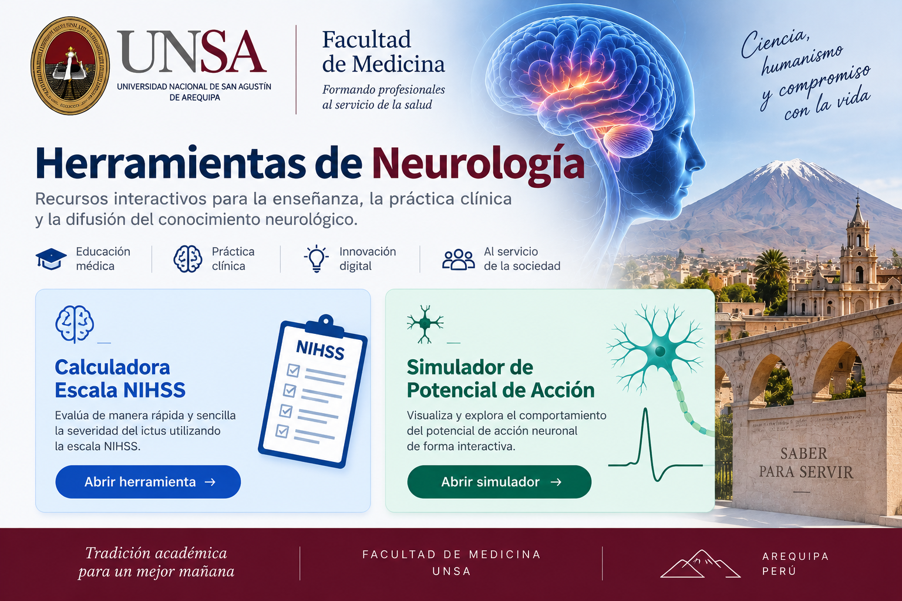

Calculadora Escala NIHSS
Evalúa de manera rápida y sencilla la severidad del ictus mediante la escala NIHSS.
Abrir herramienta →
Recursos interactivos para la enseñanza, la práctica clínica y la difusión del conocimiento neurológico.
Evalúa de manera rápida y sencilla la severidad del ictus mediante la escala NIHSS.
Abrir herramienta →Visualiza y explora de forma interactiva el comportamiento del potencial de acción neuronal.
Abrir simulador →